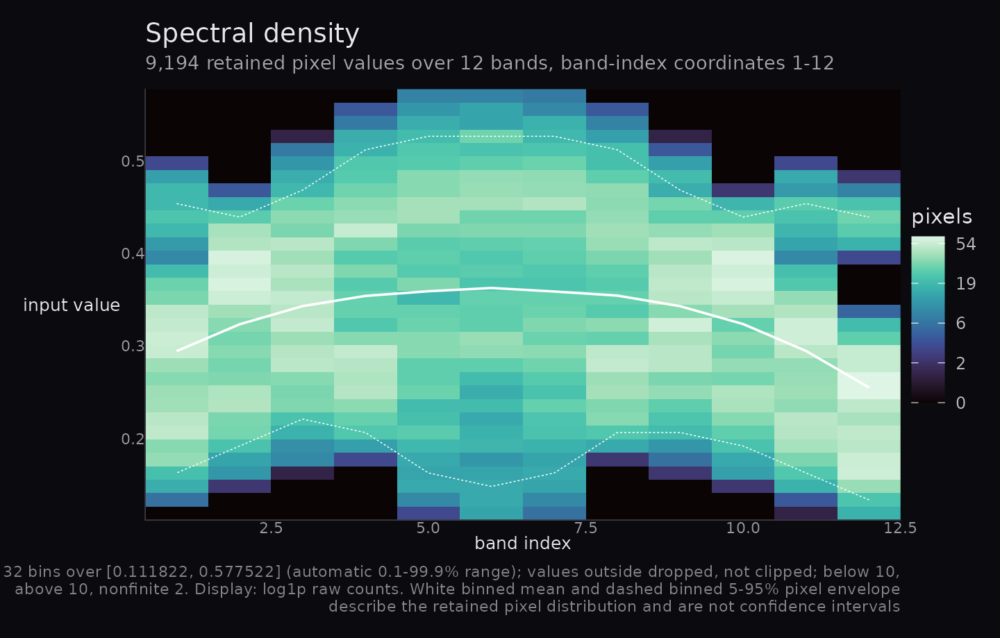
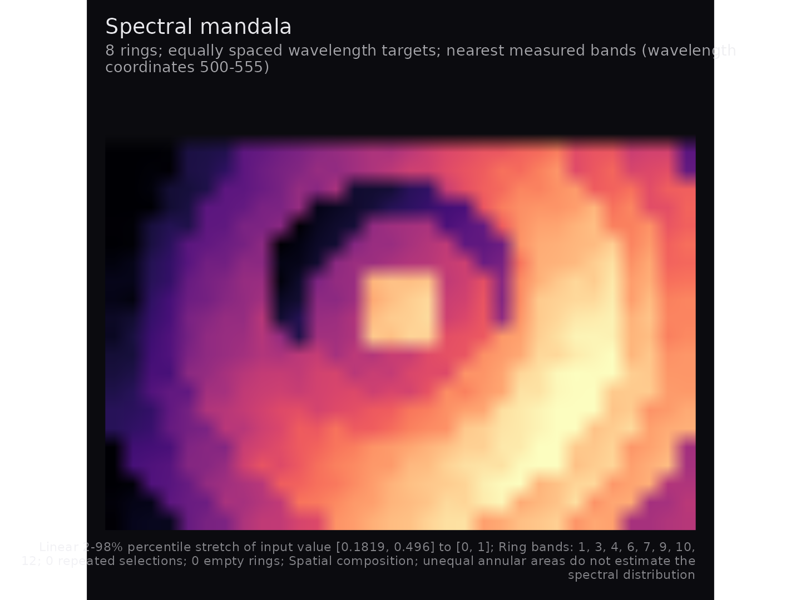
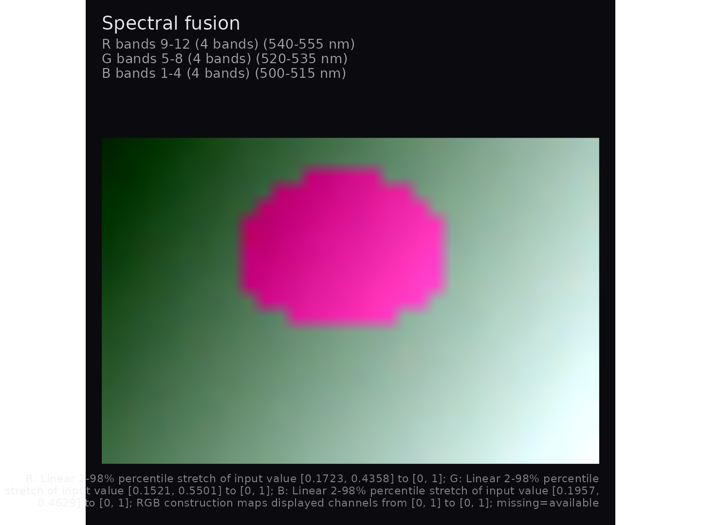
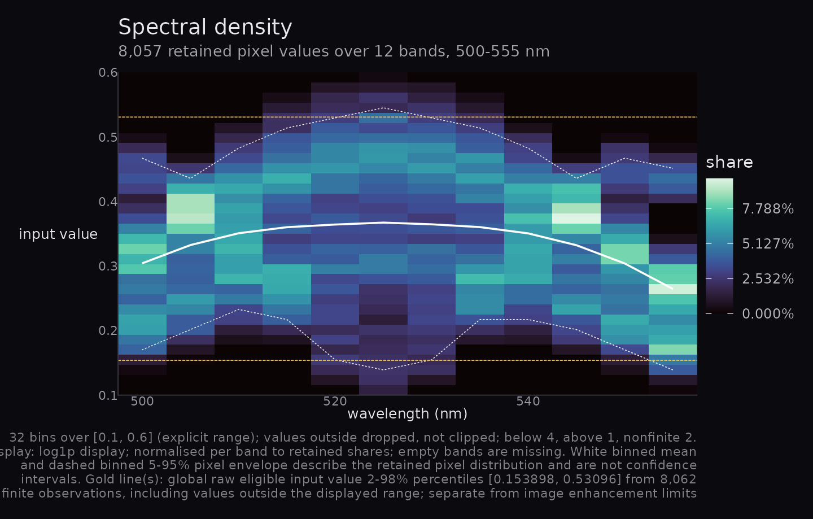
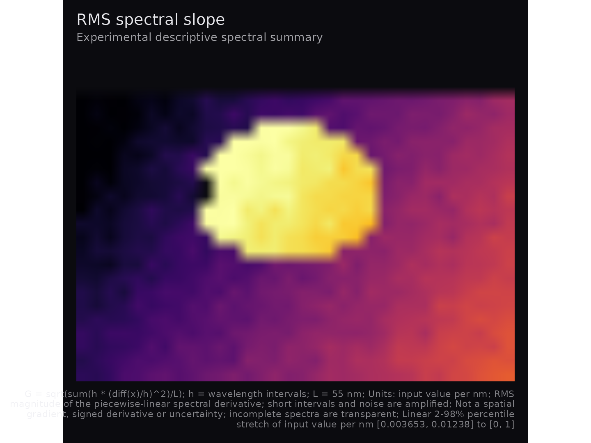
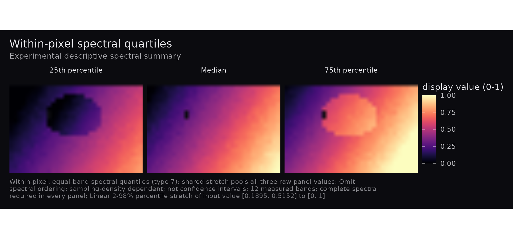

Compositions with inspectable spectral quantities
Source:vignettes/hyperspectaculR.Rmd
hyperspectaculR.RmdThe 0.2.0 candidate creates compositions and descriptive summaries
from an hsi_cube or real numeric
(rows, cols, bands) array. Reading recordings and
calibration happen upstream. The default label is input
value: a range such as 0–1 does not establish calibrated
reflectance. These plots do not support physiological inference.
Inputs and missing observations
cube <- hsa_demo_cube(rows = 24, cols = 32, bands = 12, seed = 42)
cube$mask <- matrix(TRUE, 24, 32)
cube$mask[1:3, ] <- FALSE
cube$data[10, 10, 2] <- Inf
cube$data[11, 10, 3] <- NA_real_A mask must be a logical spatial matrix without missing entries.
FALSE excludes a pixel; nonfinite observations are excluded
separately. Metadata must contain one strictly increasing finite
wavelength in nm per band. Arrays can carry mask and
wavelengths attributes. Without wavelengths the coordinates
are band indices; physical selection and slopes require
nm.
hsa_spectral_density(cube$data, nbins = 32)
Selection and display domains
p <- hsa_mandala(cube, n_rings = 8, sampling = "wavelength")
p
hsa_provenance(p)$selection$ring_band_indices
#> [1] 1 3 4 6 7 9 10 12Default mandala targets are linear in band index. Physical targets are equally spaced in nm and select nearest measured bands, with ties toward shorter wavelengths. Repeated selections and empty rings preserve geometry; the full selection is in provenance. Unequal ring areas are a spatial composition, not a spectral distribution estimate. One ring selects the first band.
strict <- hsa_fusion(cube)
available <- hsa_fusion(cube, red = 9:12, green = 5:8, blue = 1:4,
missing = "available")
available
#> Warning: Removed 96 rows containing missing values or values outside the scale range
#> (`geom_raster()`).
hsa_provenance(available)$missingness$contributors
#> $red
#> $red$selected_bands
#> [1] 4
#>
#> $red$minimum
#> [1] 0
#>
#> $red$maximum
#> [1] 4
#>
#> $red$complete_pixels
#> [1] 672
#>
#> $red$no_contributor_pixels
#> [1] 96
#>
#>
#> $green
#> $green$selected_bands
#> [1] 4
#>
#> $green$minimum
#> [1] 0
#>
#> $green$maximum
#> [1] 4
#>
#> $green$complete_pixels
#> [1] 672
#>
#> $green$no_contributor_pixels
#> [1] 96
#>
#>
#> $blue
#> $blue$selected_bands
#> [1] 4
#>
#> $blue$minimum
#> [1] 0
#>
#> $blue$maximum
#> [1] 4
#>
#> $blue$complete_pixels
#> [1] 670
#>
#> $blue$no_contributor_pixels
#> [1] 96All default RGB groups are disjoint contiguous index thirds, high
bands to red, even with by = "wavelength". Explicit groups
must all be supplied. They may overlap between channels; duplicates
within a group are errors. A one-band explicit fusion is supported.
Wavelength targets must be in range and resolve to distinct bands within
each group:
hsa_provenance(hsa_fusion(cube, red = c(545, 555), green = c(525, 535),
blue = c(500, 510), by = "wavelength"))$selection
#> $by
#> [1] "wavelength"
#>
#> $default
#> [1] FALSE
#>
#> $red
#> $red$requested
#> [1] 545 555
#>
#> $red$indices
#> [1] 10 12
#>
#> $red$coordinates
#> [1] 545 555
#>
#>
#> $green
#> $green$requested
#> [1] 525 535
#>
#> $green$indices
#> [1] 6 8
#>
#> $green$coordinates
#> [1] 525 535
#>
#>
#> $blue
#> $blue$requested
#> [1] 500 510
#>
#> $blue$indices
#> [1] 1 3
#>
#> $blue$coordinates
#> [1] 500 510missing = "propagate" requires every selected band.
"available" averages finite contributors separately by
channel, still requiring all three channels to have a contribution. It
changes the contributing population and records each channel’s
selected-band count, minimum/maximum contributors, complete-pixel count
and no-contributor-pixel count. Per-pixel contributor counts are not
retained. Missing RGB values are transparent.
p <- hsa_mandala(cube, n_rings = 8, stretch = "none",
display_limits = c(-1, 1))
hsa_provenance(p)$enhancement
#> $limits
#> [1] -1 1
#>
#> $requested_method
#> [1] "none"
#>
#> $effective_method
#> [1] "none"
#>
#> $fallback
#> NULL
#>
#> $probs
#> [1] 0.02 0.98
#>
#> $quantile_type
#> [1] 7
#>
#> $clipped_below
#> [1] 0
#>
#> $clipped_above
#> [1] 0
#>
#> $finite_count
#> [1] 672
#>
#> $excluded_count
#> [1] 96
#>
#> $display_limits
#> [1] -1 1Range and type-7 percentile stretches map to [0, 1]. A
collapsed percentile interval falls back to the finite range; constants
map to the dark endpoint. "none" preserves raw values and
requires them to fit the fixed domain. The record includes
requested/effective method, fallback, raw endpoints and
clipping/exclusion counts. Plot data keep raw_value (or raw
RGB channels).
changed <- p + ggplot2::labs(title = "Selected spatial scene") +
ggplot2::theme(plot.title = ggplot2::element_text(size = 16))
identical(hsa_provenance(p), hsa_provenance(changed))
#> [1] TRUEProvenance describes the original rendering. Ordinary theme/lab additions preserve it; arbitrary later plot edits are not recalculated. Inspect each component before patchwork composition. The accessor rejects a combined patchwork. Records contain no source cube or arbitrary input metadata.
Exact density populations
density <- hsa_spectral_density(cube, nbins = 32, limits = c(.1, .6),
normalise = "band", show_limits = TRUE)
density
accounting <- hsa_provenance(density)$missingness
with(accounting, all(finite == below + kept + above))
#> [1] TRUE
with(accounting, all(eligible == finite + nonfinite))
#> [1] TRUELimits include both endpoints, with right-closed interior bins.
Outside values are dropped, not clipped. Band shares divide by retained
counts. Empty bands have missing shares and gaps in the overlays. White
binned means and 5–95% pixel envelopes describe retained populations,
not confidence intervals. Gold lines use global raw finite eligible
observations, including those outside histogram limits; they are
separate from image enhancement limits. Automatic limits use type-7
0.1–99.9% quantiles, with a disclosed finite-range or constant padding
fallback. Irregular wavelengths have midpoint rectangle boundaries;
single-band density discloses a width-one fallback. Raw H,
breaks, references and accounting remain inspectable in the enhancement
record.
Sampling and experimental summaries
For adjacent measured values, total variation is
V = sum(abs(diff(x))); default mean step is
V/(B-1) in input-value units per measured step.
normalization = "wavelength_span" computes V/L
in input value per nm. A rise from 0 to 1 across 400 nm has mean steps
0.5 and 0.2 at three and six samples, while both physical slopes equal
0.0025 per nm. Physical units define the quantity; they do not correct
missing peaks, noise or unequal sampling.
example <- structure(list(data = array(c(0, 2, 2), c(1, 1, 3)),
wavelengths = c(500, 501, 505)), class = "hsi_cube")
hsa_spectral_flux(example, normalization = "wavelength_span")$data$raw_value
#> [1] 0.4
hsa_spectral_gradient(example)$data$raw_value
#> [1] 0.8944272
hsa_spectral_gradient(cube)
The independently verified values are 0.4 and approximately 0.894427
per nm. Experimental RMS slope is
G = sqrt(sum(h * (diff(x)/h)^2)/L) for wavelength intervals
h. It is nonnegative, loses derivative sign, and is not a
spatial gradient or uncertainty. Short intervals amplify noise. On a
flat signal with independent noise SD sigma,
E[G^2] = 2 * sigma^2 / L * sum(1/h); increasing band count
may increase this quantity. No smoothing or noise correction is applied.
Both physical slopes bridge unobserved intervals with straight lines;
interpolating extra points does not reconstruct absent information.
hsa_spectral_quartiles(cube)
quartile_example <- array(c(0, 1, 4, 9), c(1, 1, 4))
hsa_spectral_quartiles(quartile_example)$data$raw_value
#> [1] 0.75 2.50 5.25Type-7 quartiles are (0.75, 2.5, 5.25). Permuting the
bands preserves them but can change flux. These experimental panels
weight measured bands equally, discard order and depend on sampling
density. They are not uncertainty intervals. All three panels share
complete-spectrum validity and one pooled stretch/domain/legend. A
single band gives identical panels. Experimental summaries offer
descriptive comparisons, without universal instrument or sampling
comparability.
Migration from 0.1.0
Masked/nonfinite pixels, dark endpoints, fusion thirds, raw domains,
density geometry and retained counts can change visible output. Missing
wavelengths are now labelled as indices. New exports include provenance,
RMS slope and quartiles. Existing argument order and
normalise remain supported; conflicting explicit
normalise/normalization values error.
Malformed metadata, fractional or out-of-range indices, duplicate
within-group selections, incomplete RGB requests, invalid
counts/probabilities and raw values outside the display domain now fail
explicitly. Entirely invalid outputs fail instead of producing an
apparently measured blank image.